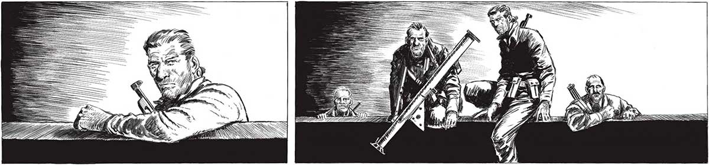

278 IL LTACOO 7 FT ¡TODAVÍA NO, FRANCO! SI LOS BALEAMOG., EN ES UNA CHANCE UN INSTANTE TODA LA PLAZA SE NOS ECHA4- MINIMA, PERO RA ENCIMA... SE ME OCURRE UNA IDEA... ; DE TODOS MO: QUIZA” RESULTE ... ZA DOS ESTAMOS PERDIDOS... VALE Ny 4 Y ar ES AAA VE NE SERA Muy DIFÍCIL QUE RESULTARA. PERO, = L “MANO”... ==> QUE LOS DIRIGÍA ORDENARÍA SUS MOVIMIENTOS SEGÚN FUERAN LAS IMPRESIONES VISUALES DE LOS ROBOTS... Sl CONSEGOÍAMOS QUE LOS ROBOTS SOLO VIERAN ROBOTS... a] "IN Ar lila nod BATTTTT
